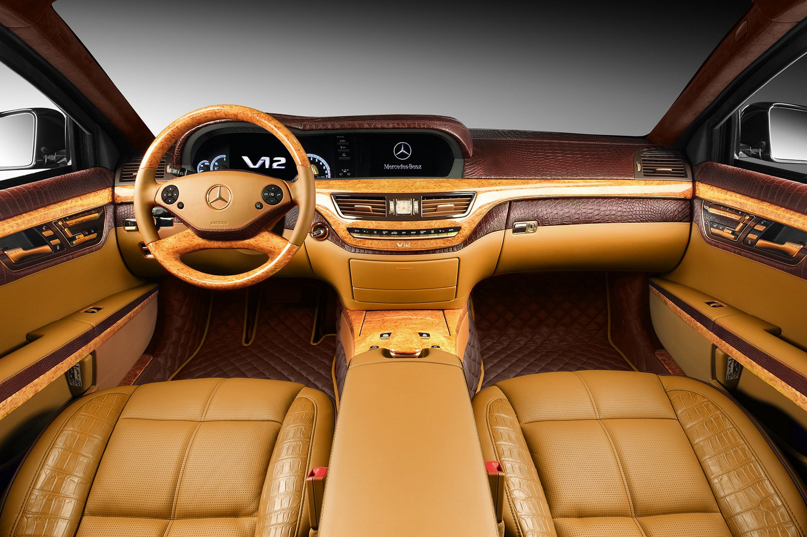
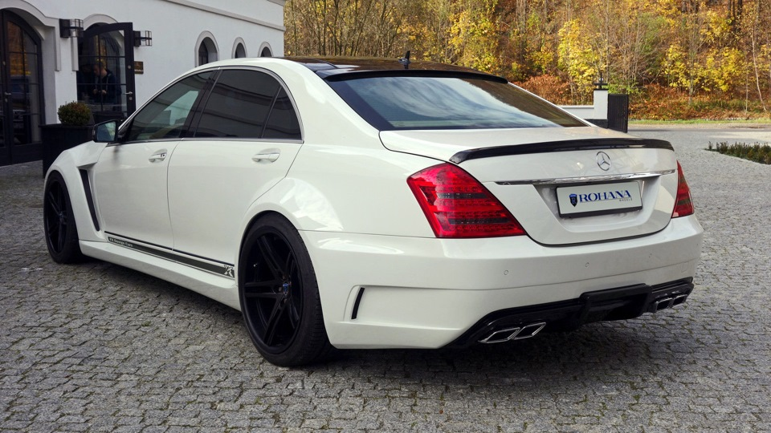
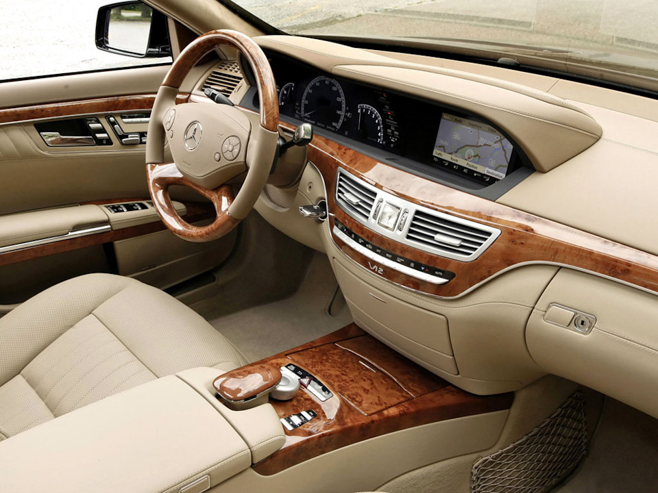
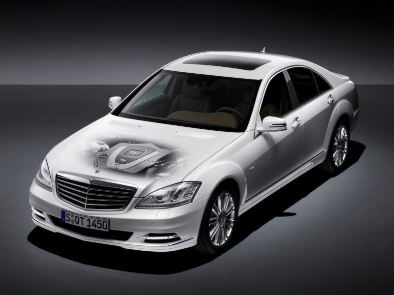

Модели

|
 |  |  |

|
Mercedes-Benz W221 S-Class предлагает широкий ассортимент моделей, включая S350, S500 и S600. Эти автомобили известны своим роскошным интерьером, передовыми технологиями и выдающейся производительностью. Выпускался с бензиновыми (S 300–S 600), дизельными (S 320 CDI, S 350 CDI) и гибридными (S 400 Hybrid) двигателями, а также в высокопроизводительных версиях AMG (S 63 и S 65). После рестайлинга в 2009 году обновился дизайн, двигатели стали мощнее и экономичнее. Оснащение включало адаптивную подвеску, систему ночного видения и передовые системы безопасности.
История
|
История Mercedes-Benz W221 S-класса (2005–2013) — это путь совершенствования роскоши, инноваций и производительности. Основные этапы:
W221 стал эталоном для представительских автомобилей благодаря сочетанию роскоши, технологий и производительности. |
 |
Контакты
Porsche, свяжитесь со мной по электронной почте: steave1drolle@gmail.com